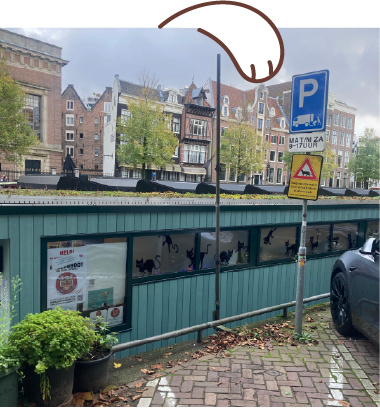
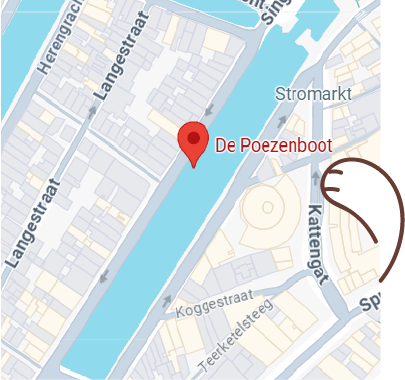

Elke dag worden er katten achtergelaten om verschillende redenen. Mensen kunnen het niet meer betalen, de kat heeft gedragsproblemen, etc. Bij de Poezenboot proberen ze zoveel mogelijk van deze katten de helpen.
De boot ligt aan de Singel, in de buurt van Amsterdam Centraal (ongeveer 10 minuten lopen).
Toen ik bij de Poezenboot langs ging, stond er een flinke rij. Ze zijn namelijk maar een paar dagen per week open, en dan ook maar 2 uur per dag. Na ongeveer een half uur in de rij gestaan te hebben, kon ik naar binnen.
Binnen lopen alle katten die daar klaar voor zijn vrij rond. Alle katten die nog wat angstiger zijn zitten in hun kooien. Ook hebben ze een klein buitenverblijf.
Singel 38G
1015 AB
Amsterdam
Contact
Telefoon: 0648656909
E-mail: arkvanweelde@hva.nl